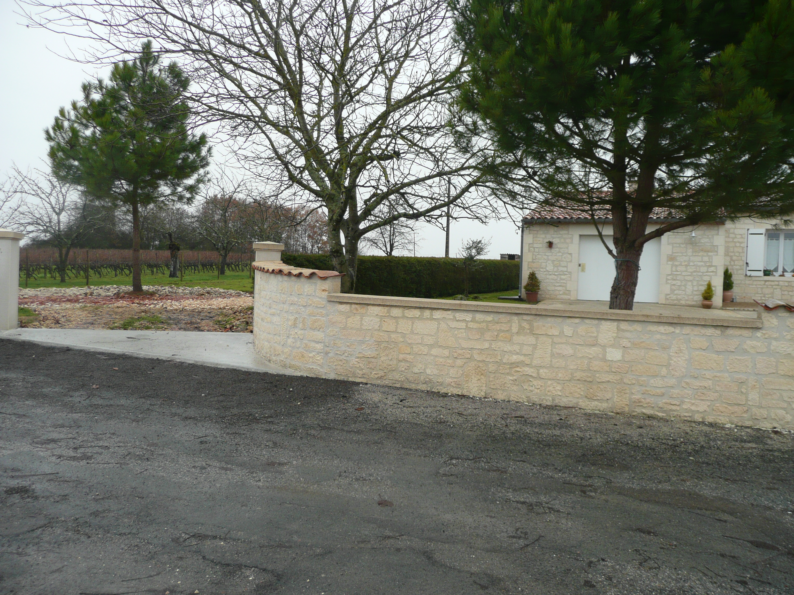
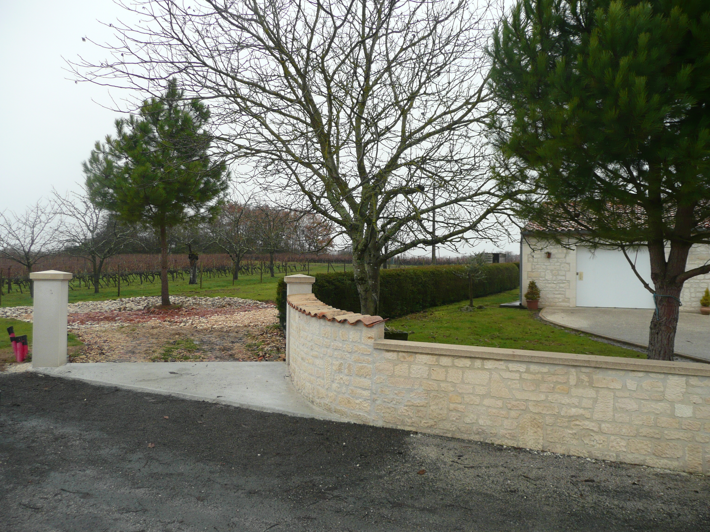
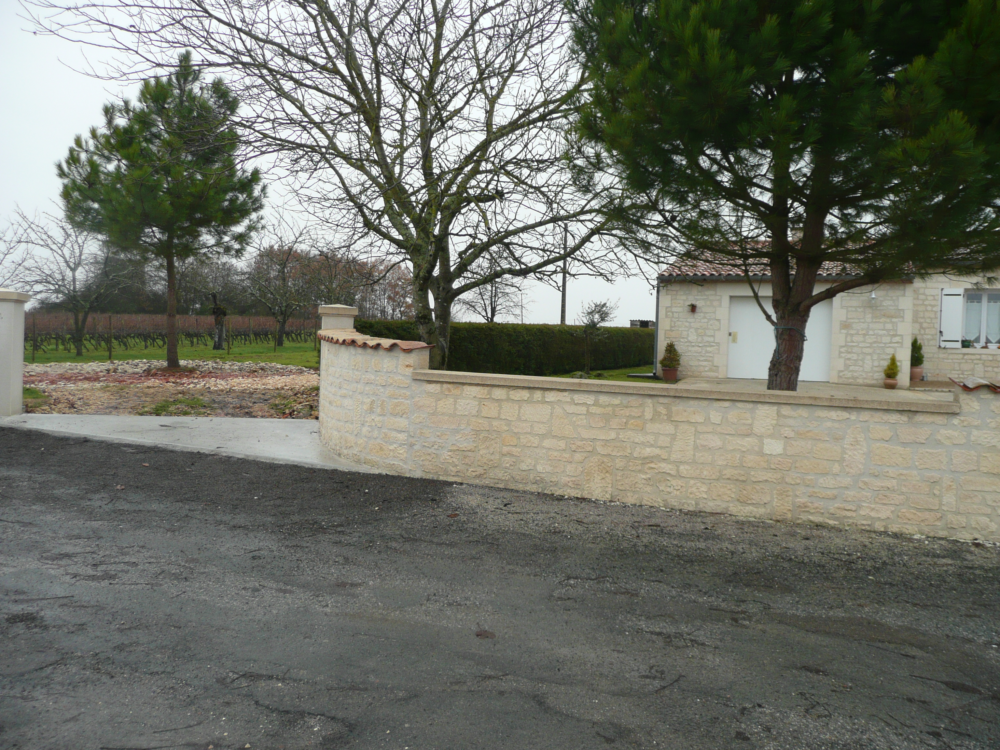
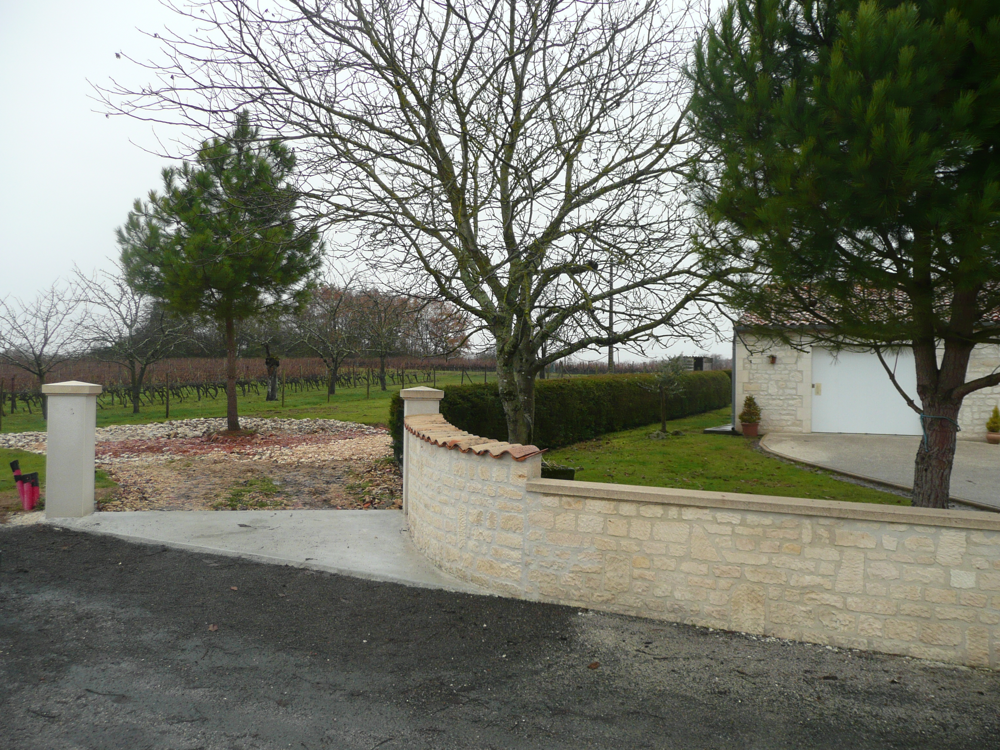

Envie de decouvrir la magnifique région qu'est la Charente Maritime, de
télétravailler dans un environnement calme ou simplement de vous
installer dans un endroit retiré, cette maison individuelle est faite
pour vous.
Sur les hauteurs d'un petit village, ce bien récent de 73 m² est de
plein pied, dispose d'un parking privé, d'une terrasse et d'un jardin
clos. Le caractère fonctionnel de ce logement permet un accès aux
personnes à mobilité réduite.
Deux chambres, une belle pièce de vie mélant salon/salle à
manger/cuisine aménagée et une salle de bains spacieuse vous attendent.
Envie de decouvrir la magnifique région qu'est la Charente Maritime, de
télétravailler dans un environnement calme ou simplement de vous
installer dans un endroit retiré, cette maison individuelle est faite
pour vous.
Sur les hauteurs d'un petit village, ce bien récent de 73 m² est de
plein pied, dispose d'un parking privé, d'une terrasse et d'un jardin
clos. Le caractère fonctionnel de ce logement permet un accès aux
personnes à mobilité réduite.
Deux chambres, une belle pièce de vie mélant salon/salle à
manger/cuisine aménagée et une salle de bains spacieuse vous attendent.
wifi
hiking
accessible
outdoor_garden
countertops
local_laundry_service
local_parking
bathtub
table_restaurant
tv
water
bed
bedroom_child

 


